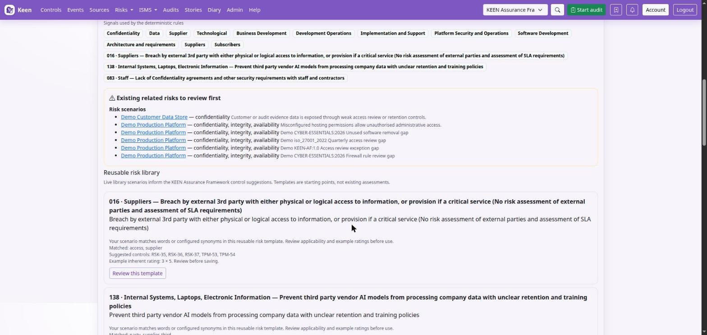

Using KEEN
Risks, treatments and ownership
Chapter 7 of 16
Assess and treat risks
This chapter takes one risk from a worry to a treated, owned assessment. It covers the scoring method, the reusable library that gives you a head start, the Mitigator that turns a sentence into suggestions, and ownership by role. You need risk.read to view risks and risk.manage to change them.
- Risk scenario
- A specific threat to a specific asset with a business consequence, such as “ransomware encrypts the file server and backups cannot be restored”.
- Inherent and residual
- Likelihood and impact before treatment, and after the intended treatment. Each is rated 1–5 and the score is likelihood × impact.
- Treatment
- What you decide to do about the risk: the strategy, status, plan and due date.
Assess and maintain risks
KEEN keeps one set of risk scenarios behind the risk editor, the register and the heatmap. A risk can carry confidentiality, integrity and availability (CIA) associations, an asset, categories, an owner, treatment information and controls from any relevant framework.
In Risks, describe the threat and its business context, select or create the asset, set the CIA associations and assign an owner. Keep each scenario specific enough to support a treatment decision; several indistinguishable risks for the same situation help nobody.
Rate the inherent likelihood and impact first, then the residual ratings after the intended treatment. Record the treatment strategy, status, plan and due date so a lower residual score comes with its explanation.
| Score | Default band |
|---|---|
| 1–4 | Low |
| 5–9 | Moderate |
| 10–16 | High |
| 17–25 | Critical |
Threshold changes apply across the whole register, so agree the scoring method before changing them. An unrated risk is different from a low risk: complete the ratings before you prioritise.
Use the reusable risk library

Open the Risk register and find the Reusable risk library. Choose a scenario to start a new assessment: KEEN fills in the description, CIA tags, treatment guidance and any example assessment fields. Review the suggested asset and example ratings, set the real owner and treatment, and save the risk as your own.
To contribute a scenario of your own, select a risk in the register and choose Save scenario to library. Use a general name and remove customer-specific or personal details first. Reuse always creates an independent assessment.
Going deeper: library templates and KEEN-AF controls
The supplied library integrates with the KEEN Assurance Framework. Templates can suggest KEEN-AF control references; when you create the risk, valid remaining references are linked under KEEN-AF:1.0 even if another framework is selected. Links for other frameworks stay separately manageable. Check implementation evidence for each suggested control.
Risk register exchange and the Mitigator
Export CSV gives you the register for an external review and the current column headers for an import. Import creates new scenarios only; edit existing records in the risk editor.
The KEEN Mitigator suggests controls from scenario categories, CIA associations and other assessment inputs. Use its suggestions alongside the library and your own analysis, and remove relationships that do not fit.
Going deeper: import limits
An import accepts up to 1,000 rows and 2 MB, uses the intended framework for control references, and rejects the whole file if any row fails validation. Review ownership, scores and control references before importing, since re-importing the same file duplicates risks.
Use the Reusable Risk Library tab
On the Risk Register page, switch from Risk register & heatmap to the Reusable Risk Library tab. The register holds your organisation’s assessments; the library offers starting points with threat descriptions, treatment guidance and example assessment information.
Choose a scenario, review it in the risk editor, adapt the asset, owner, likelihood, impact, treatment and proposed control links, and save it into your register. A library suggestion becomes an organisational risk only when you review and save it, and each saved assessment is independent of its template afterwards.
Assess a risk through to treatment

- Open Risks to create a scenario, or choose Use template in the reusable library. Describe the threat, the affected asset and the business consequence. “Cyber risk” on its own is a label, not an assessment.
- Select the asset, category and subcategory, the CIA associations and an owner. CIA describes the effects of a scenario; the 1–5 ratings assess likelihood and impact.
- Rate inherent likelihood and impact before treatment, and record the basis. Likelihood 4 and impact 5 give an inherent score of 20.
- Choose the relevant controls and a treatment strategy. In the register, record the treatment status, plan and due date, and give the owner a concrete action with completion evidence to obtain.
- Set residual likelihood and impact for the position after treatment; 2 × 3 gives 6. Explain why the treatment changes the risk and link evidence of completed treatment.
- Review the saved risk in the register and the heatmap. Follow its controls and compare the supporting evidence with the treatment claim.

Review assessments when assets, threats, vendors, controls or the organisation change.
Reusable scenarios and CSV exchange
A template supplies a starting description, CIA tags, treatment guidance and any example ratings; assess the actual context rather than accepting them. Save scenario to library contributes a generalised scenario from a register risk, and assessments stay independent when their template is later edited or deleted.
For a CSV exchange, export first to get the headers, then import to create new scenarios. Check identifiers, scores, owner details and the framework used for control references before you import.
Use the Mitigator’s suggestions
The KEEN Mitigator turns a plain-language concern into suggestions you can review. Describe the worry, name the asset, party or process, pick the category, subcategory, CIA associations and impact flags, and choose Analyse scenario.



Results can include suggested controls, similar risks already in your register, reusable templates, PESTLE(E) issues and interested parties. Matching terms and relevance indicators explain why each candidate appears. Nothing is saved until you review it in the normal editor.
- Read the detected signals and check they describe your concern. A keyword match can still be irrelevant, or refer to something already prevented.
- Look at the library candidates and their control references. Review this template opens the risk editor so you can check the description and example ratings before saving.
- Review the suggested controls and remove unsuitable ones. Out-of-scope controls are labelled and keep their current applicability until you edit it.
- Check the existing matching risks before creating another assessment. Review PESTLE(E) and Interested Party candidates separately.
- Create a risk from your scenario with the selected controls, or follow a template. Set likelihood and impact yourself and complete the owner and treatment.
Try it with “Our staff use unapproved AI tools”, “Supplier contracts do not protect personal data”, or “We cannot restore our backups after ransomware”. If the matches are too broad, add context.
Going deeper: how the matching works
Analysis runs inside KEEN with deterministic, explainable rules and no external AI service. It normalises words and common variants, recognises configured keywords and synonyms, and ranks relevant catalogue entries. It can match negated statements, so confirm each proposed risk against the actual scenario.
In KEEN-AF:1.0 scope the wizard also searches the reusable library, shows the matching terms, and uses matching templates’ KEEN-AF control references to strengthen its control recommendations, including the extended library’s AI risks such as prompt injection, model extraction, unapproved AI tools and excessive agent permissions. Other framework scopes keep framework-specific suggestions without importing KEEN-AF library links. Edits to the library and control catalogue are read on the next analysis.
Risk ownership by organisational role
A risk has one owner, and that owner can be a person or an organisational role, so ownership survives staff changes.
Create roles in the ISMS organisation chart, assign users to them, then choose the role in the risk editor’s Owner field. Users directly assigned to an owning role see its risks in My risks and get the same risk-specific read and question access as an individual owner. Editing still needs the usual risk-management permission.
Going deeper: membership, exports and deletion
Role membership changes apply on the next access check, and membership of a parent node does not grant ownership of roles below it. Role ownership appears in the register, risk details, control associations and change history; CSV exports keep the role identifier separately from the username. Deleting a role leaves its risks unassigned.